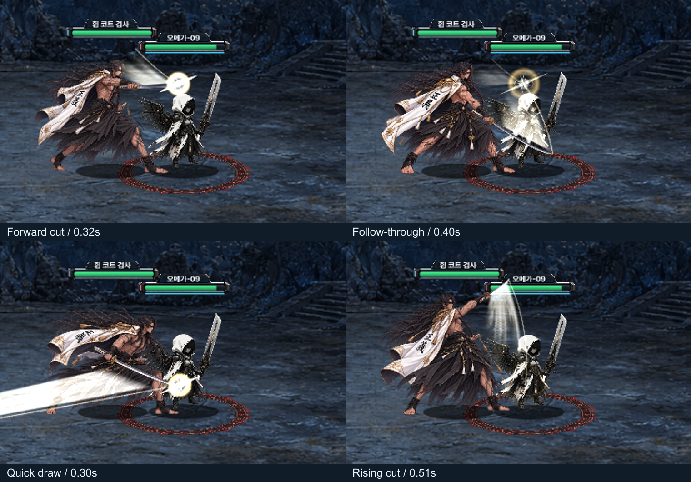
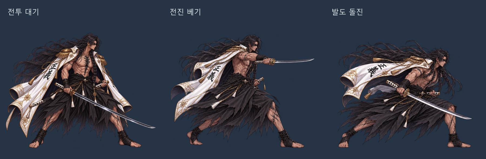

V3.5 · 2026.11.02 검광 업데이트
칼이 지나간 자리에 남는 검광
흰 코트 검사의 전진 베기와 발도·올려베기. 칼의 자세와 이동 경로에 맞춰 흰색·금색 잔광이 이어집니다.
검광·타격 효과 ON
몸동작 비교 · 효과 OFF
정상 전투 속도에서 기본 공격과 발도 스킬을 각각 3회 재생했습니다. 재생 버튼을 눌러 확인할 수 있습니다.
베기 → 후속 자세 / 발도 → 올려베기

용병 작화와 Spine 원본
큰 자세는 교체 작화로 연결합니다. 현재는 로컬 검토용 리소스입니다.
Spine 편집 원본 다운로드